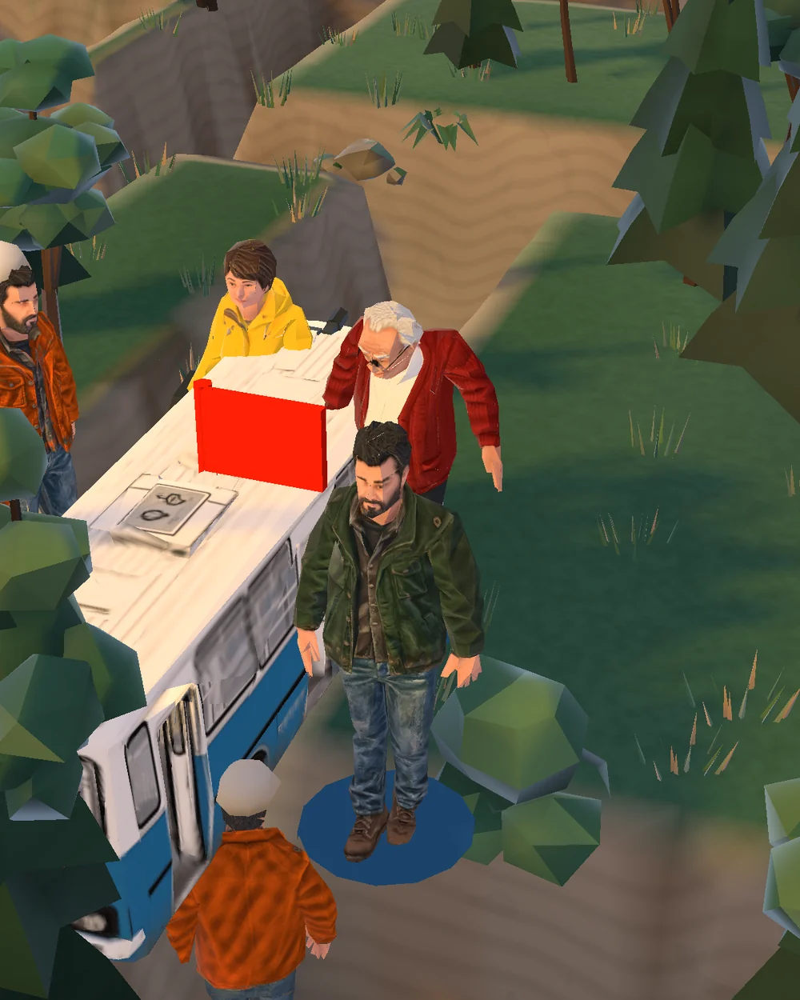
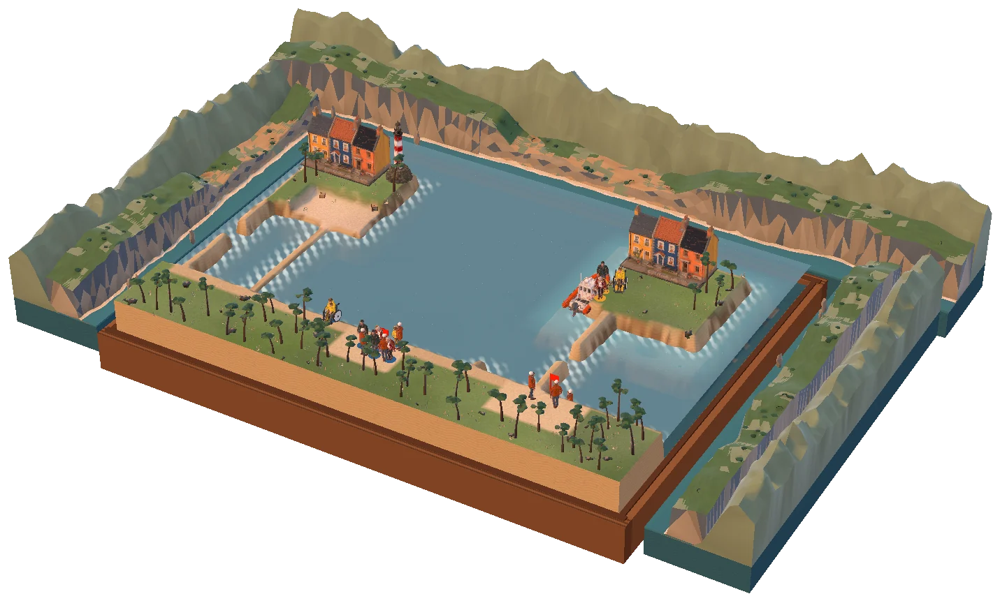

In development · Meta Quest 3 and 3S
Five worlds
Each valley teaches one kind of danger. Later missions combine what you’ve learned.

01 / 05Alder ValleyEditor render
01Floods
Alder Valley
A stepped river valley with cedar houses, terraced fields, a stone viaduct, a bright rescue depot, and a mountain reservoir.
- What you learn
- Redirect water without transferring danger onto an evacuation route.
- Afterwards
- A repaired bridge carries the bus past a dry village square. The final postcard animates a river lantern festival.
Missions
- W1-M1First CrossingLearn bridge placement, flood forecasts, and a first boat route.
- W1-M2The Lower RoadUnderstand downstream consequences and dry power placement.
- W1-M3Two BanksAllocate transport capacity between separated groups.
- W1-M4Power Before WaterTrade early protection against immediate evacuation.
- W1-M5The Long Way HomeCombine flow, power, routing, and a deliberate equipment tradeoff.
Playable in the development build and validated by automated replays of two different winning plans. Not yet tested on a headset.

DetailA group gathers by the bus at the crossing.Editor render

02 / 05EmberwoodEditor render
02Wildfire
Emberwood
An inhabited forest reserve with a lookout tower, sawmill, campsite, orchard, and hillside water tanks.
- What you learn
- Create defensible transport routes by managing fuel, water, power, and forecast wind.
- Afterwards
- Rain arrives after stabilization, not as a deus ex machina that solves the mission. Residents replant the cleared strip.
Missions
- W2-M1A Line in the TreesLearn fuel removal and moisture.
- W2-M2Last Bus from CampCoordinate finite ground transport capacity.
- W2-M3Water Is a RouteMake water supply and transport choices interact.
- W2-M4When the Wind TurnsAnticipate forecast direction changes.
- W2-M5The Green CorridorMaintain a living evacuation corridor through a combined burn.
Playable in the development build and validated by automated replays of two different winning plans. Not yet tested on a headset.

DetailResidents reach the landing, where the rescue crew waits.Editor render

03 / 05FrostlineEditor render
03Snow and avalanches
Frostline
A snow-covered alpine settlement with a funicular, weather observatory, cable station, avalanche fences, and steep terraces.
- What you learn
- Stabilize selected structures and schedule vertical rescue before runout paths close.
- Afterwards
- The funicular returns to service, carrying supplies rather than a compulsory victory cutscene.
Missions
- W3-M1Hold the StationIntroduce structure-specific support and vertical transfers.
- W3-M2Above the SnowlineManage independent rescue links and power.
- W3-M3The Quiet SlopeRead runout zones and preserve a secondary route.
- W3-M4Cable and CurrentCombine snow support and flooding power platforms.
- W3-M5Dawn at FrostlineCoordinate a complete mountain evacuation.
Playable in the development build and validated by automated replays of two different winning plans. Not yet tested on a headset.

DetailArms up at the Frostline landing.Editor render

04 / 05TidemarkEditor render
04Tides and storm power
Tidemark
A fictional coastal archipelago with pale plaster houses, boatyards, a lighthouse, raised walkways, and a tidal market.
- What you learn
- Exploit safe tide windows and keep the power network dry while coordinating multiple transport legs.
- Afterwards
- The lighthouse sweeps across safe harbor and the floating market reopens.
Missions
- W4-M1Between Two TidesLearn readable tide windows.
- W4-M2Keep the LightKeep a dry power route while transporting residents.
- W4-M3The Floating MarketHandle multiple pickups and staging capacity.
- W4-M4Storm SwitchCombine rain inflow and sea-level changes.
- W4-M5Harbor of EveryoneMaster transport, tide windows, and power topology.
Playable in the development build and validated by automated replays of two different winning plans. Not yet tested on a headset.

DetailSafe at the harbour landing.Editor render

05 / 05Cinder ReachEditor render
05Lava and heat
Cinder Reach
A volcanic island research town with basalt terraces, a geothermal station, orchards, a ferry terminal, and cooling channels.
- What you learn
- Trade temporary protection against permanent evacuation while slow hazards remove routes.
- Afterwards
- The rescue fleet leaves together; recovered residents send postcards from every earlier world.
Missions
- W5-M1A Path Through HeatIntroduce temporary cooled crossings.
- W5-M2Borrowed SafetyUse refuge as a temporary logistics tool, not a destination.
- W5-M3The Cooling WorksProtect coolant logistics and power.
- W5-M4Three Ways OutChoose among sea, road, and temporary crossings.
- W5-M5Every Little LifeFinal combined-system rescue with meaningful priorities.
Playable in the development build and validated by automated replays of two different winning plans. Not yet tested on a headset.

DetailA Cinder Reach group, one resident in a wheelchair.Editor render